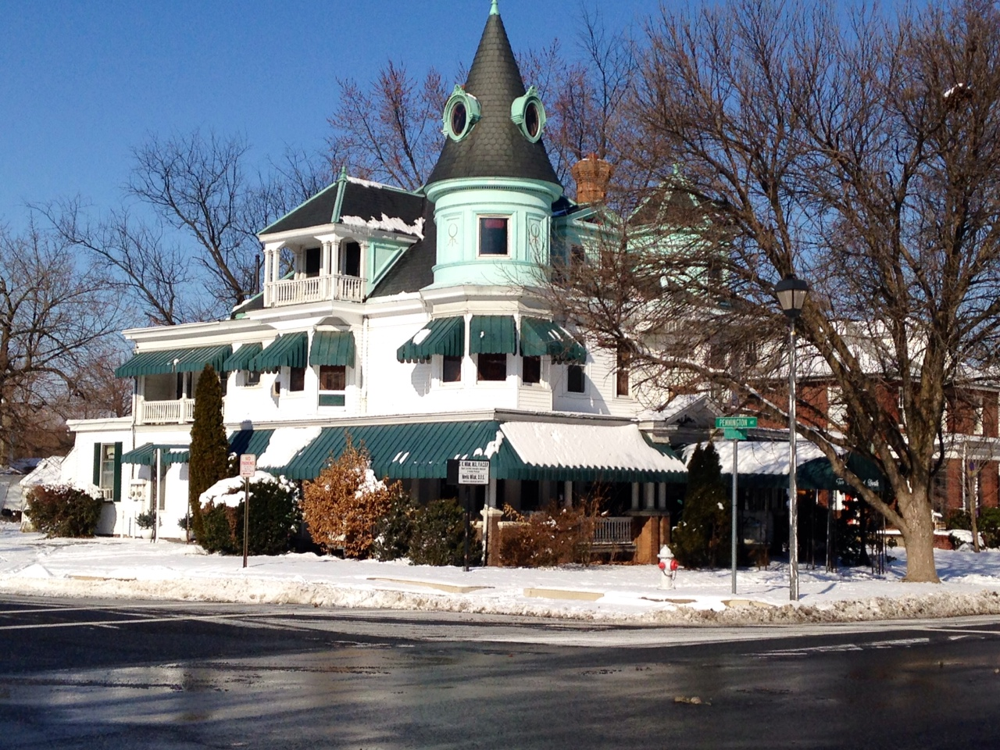

Follow The Lafayette Trail, a continuous blue line painted on the sidewalks throughout the city. The Trail runs approximately 3 miles linking museums, parks, marinas and historic buildings. Notice the blue numbered medallions embedded in the sidewalks. These denote the properties highlighted in this mobile app and in the Lafayette Trail brochure (brochure available at the Visitor Center, 450 Pennington Avenue). You will see blue oval “Walk the Lafayette Trail” signs posted along the way to guide you.
The Lafayette Trail and this mobile app highlight just a small sample of noteworthy buildings within the National Register Historic District. Venture onto side streets and alleys to see additional picturesque streetscapes and interesting structures. Enjoy the beautiful vistas of the Susquehanna River to the east and the Chesapeake Bay at the south end of town.